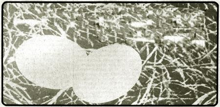

Alice Merritt lives on the outskirts of a small town in eastern North Carolina, and has made quite a name for herself locally as a poultry fancier. Besides the chickens she describes in the following article, Ms. Merritt has kept ducks, peafowl, and a number of geese (a heathenish lot, to judge from their attack on a visiting preacher) and is now experimenting with Araucanas, since their colored eggs currently are much in demand. Alice's chicken business has been cut back somewhat since this account was written, partly because the neighborhood is troubled with a pack of wild dogs and the flock now must be more closely confined. The operation was quite profitable on a small scale at its height, however, and Ms. Merritt has been kind enough to share her experience with Mother Earth News readers.
Unlike most of my neighbors, I keep chickens and unlike the flocks of the large operators who supply the local markets, my birds roam unconfined. They pick up much of their own living, cost me little in time or money, and produce yellower yolked eggs and more succulent meat than I could hope to harvest from fowl reared in wire cages. Best of all, other folks seem to appreciate that kind of good eating as much as I do and I find a ready market for my homegrown poultry products.
I have a list of regular customers who buy my eggs and chickens year round, at premium prices. These are choosy people who don't want to eat the products of commercial flocks raised on chemically treated food. In fact, they pay me not to feed such rations. Some even claim that they'd recognize my wares anywhere! Satisfied buyers refer their friends to me, and I seldom have more meat or eggs than I can sell but if there are any extra layings, my neighbors are glad to purchase them at my usual price (between 50 cents and 60 cents a dozen).
Some of the chickens I sell are unneeded roosters, which I offer from fryer weight on up either live or dressed, as the customer prefers, at $I.00 to $1.50 per bird depending on its size. Others are my less productive laying hens, which I cull about once a year. Any extra culls or roosters go into the freezer for home use or later sale.
Most of my buyers place orders regularly, or phone in their requests ahead of time. Since I don't make deliveries, the customer comes to my home and I have the package waiting when he or she arrives.
The 40 or so chickens on which this business is based are my own breed: a mixture of Pit Game, Black Pit Game, Black Orpington, New Hampshire Red, and Turken. (The Turken has a clean, red neck resembling that of a turkey. "What happened to that chicken's neck?" and "Are they kin to turkeys?" my visitors ask. Some find it hard to believe that these odd looking birds are really chickens and come from the egg looking just like that.)
I never buy grown hens from commercial operators or anyone else, either. Some years ago I purchased 20 layers from an overstocked neighbor who had a large flock, and then discovered that my acquisitions couldn't pick up corn or grain from the ground. Their former owner had cut away the lower part of their bills so that they could eat only laying mash, presumably to force the production of more eggs. Since I feed no rations of that kind, the new hens joined the culls in my freezer (and I used them myself, rather than offend my discriminating customers).
Nowadays, when I see the need for more hens, I buy New Hampshire Reds or other good stock from local hatcheries. Often I choose sexed pullets, but sometimes ask for regular run chicks (since roosters and young fryers are in demand anyway). I select the nicest cockerels for breeding purposes and dispose of the others.
My chicks' first home is a box made of scrap lumber with a bottom of small-mesh wire, through which droppings fall to an easily cleanable platform. The sides of the homemade brooder admit light but are shielded from bad weather by a curtain of old sheeting. A 60-watt bulb hangs from a weatherproof cord to provide warmth for the biddies. The height at which it's adjusted depends on the weather, and takes a bit of figuring since a bulb that's placed too low will cook the chicks, while one that's too high does little good. The arrangement is: valuable for light as well as for warmth because the young birds can feed 24 hours a day under the artificial illumination, and because rata won't bother them as long as the brooder is lit.
Brooder chicks are fed starter mash mixed with cornmeal or table scraps. I make waterers by punching a hole about half an inch from the top of a three-pound shortening can, filling the container with water, placing an aluminum pie or cake pan on top, and turning the whole thing upside down. Water trickles out of the tin to the level of the hole, and the pan is refilled automatically as the chicks drink.
When the biddies are three weeks old, I begin to turn them out for at least an hour a day. The time is increased gradually to condition the newcomers to take their place among young birds which have grown up here.
Most of my home-grown chicks are offspring of hens which are especially good at hiding their nests. If one of these crafty old gals is already setting when I find the eggs, I let her hatch them and raise the brood herself and some are such experts at concealment that I won't even know what they're up to until they appear with their new families. I feed the little ones extra cracked corn, but otherwise leave their care to the mothers. Since I keep only vigorous roosters, I know the biddies are of hardy stock and those which survive such a life are sure to be strong birds.
I don't set a hen myself unless I've obtained eggs which I think will improve my breed. When I do, I'll sometimes shut up the mother and her family for a week or so after hatching and feed them on grits, oatmeal, or table scraps. The chicks may be allowed to run loose while the hen is kept in (so she won't lead the young ones through wet grass) or all may be turned out, according to the weather. In any case, mama always furnishes warmth and protection at night.
The food my chickens eat is very important to my customers, and I keep careful check on anything that could cause an off flavor in their meat. Nothing with a fishy smell; for instance, is allowed on the premises. I also cut weeds before they mature, because one kinda member of the genus Crotalaria-bears seeds which I'm told are poisonous to fowl. (Several species of this genus occur in the southeastern United States. The most familiar is Crotalaria sagittalis or rattlebox, which produces yellow flowers shaped like those of the garden pea followed by the seedpods which give the plant its common name. I haven't been able to learn for sure which species, if any, are toxic to poultry, and would be pleased to receive more information.-MOTHER.)
My flock's basic diet is table scraps and odds and ends from the garden: outer leaves of collards and cabbage, large cucumbers and squash (split open), and so forth. Grass cuttings left by the mower also become chicken feed, and none are left to accumulate in the yard.
Some crops are grown just for the chickens. Rape, especially, is easy to raise and produces quick results. I simply rake the ground, scatter seed, and forget it the greens are ready for the flock about a week later. (More seed would come up if I covered the bed with dirt, but I don't bother.) I also put in about half an acre of rye, wheat, or oats, usually from the less expensive seed which is sold as feed. The same stock of oats is a good poultry food just as it comes from the bag.
When soybeans are gathered on our place, the cows and chickens forage the field after the combines have gone over it. The soybean straw also goes to the birds, which eat what they can and shred the rest into an ideal mulch for the garden.
My neighbors' harvested cornfields are another good source of chicken feed, since I make arrangements to pick up the ears the mechanical harvester leaves at the ends of rows. Some folks let me have all I can find, others give me half the gleanings. I keep the sacks of corn under shelter-in an airy place, to prevent mold and feed the grain as necessary by just throwing the whole cobs near the chickenhouse. The flock gets exercise by picking - the kernels off, and not a single one is wasted.
Chickens must consume some grit to help them digest their food so I occasionally buy surplus sand from a home builder or haul a wheelbarrow load home from beside the road. Cracked oyster shells (available from farm supply stores) are fed regularly to strengthen the shells of my birds' eggs. Whenever I run out of this supplement, I soon notice the difference.
My small flock is housed in part of an old shelter, which I enclosed with scrap lumber and fitted with narrow roosts. Actually, the chickens prefer to spend the night perched on tractors, beams in the barn, and other high places but when I found that some had gone so far as to move in with neighbors, I began to shut them up at bedtime to teach them where home was. My son and I have regular roundups: He catches the high-roosting strays, while I get those lower down. A week of this convinces most of the fowl, and the stubborn ones fall to the rifle.
Nests are nailed on racks, placed under shelters, or located wherever I think a hen might lay. Pine straw is the handiest bedding around, but I also use soft hay, dry grass, discarded string, rags, shredded paper, etc. The used material can be removed later and spread on the garden as mulch.
Many of my fowl "steal" nests that is, lay in spots of their own choosing-and I scout for these locations several times a week by listening for the clucking of the hens. (It's worth checking any nearby low places, since summer nests are often just holes hollowed out of the ground.) My grandson helps in my daily "Easter egg hunts" and enjoys himself thoroughly. Regular search and careful handling of the layings assures my customers of fresh hen fruit but if a buyer does complain of runny eggs, I take his word for it and give him replacements.
You may be wondering how I keep my free-ranging birds out of the crops and garden. Very simple! I cut the weeds along the borders of the planted area, sink posts in the ground, and string electric wire which is connected to the same charger my husband uses for cow control. The strand runs across the ends of rows and wherever poultry could give trouble, at a level slightly lower than that of a chicken's back. A whole field can be fenced quickly in this way and trespassers get such a shock that few return for a second dose. Persistent troublemakers are culled.
Although the chickens themselves are unwelcome in the garden, their manure is another matter. The dung from the birds' house and the removable tray under the brooder are emptied regularly to control flies and odor, and any droppings I don't use on flowers and shrubs find a ready market as fertilizer. A neighbor who operates an organic truck farm is glad to buy both the chicken and any cow manure we have to spare. Other by-products from the fowl go into the compost pile and onto the garden.
Chickens raised as I've described are little trouble to keep, and very profitable (I can expect to clear between $300 and $400 a year from meat, eggs, and fertilizer). The birds, however, are more than just a source of cash, they're my friends. They follow me about like dogs when I'm working, I talk to them when they cackle or cluck to me, and they seem to understand what I say. Some, I'm convinced, have deliberately led me to nests of eggs or chicks. They know I won't hurt them without cause. Every day I see the miracles of birth, life, and death unfold in the flock, and my life is the richer for the presence of my feathered companions.
|
 |
|
|